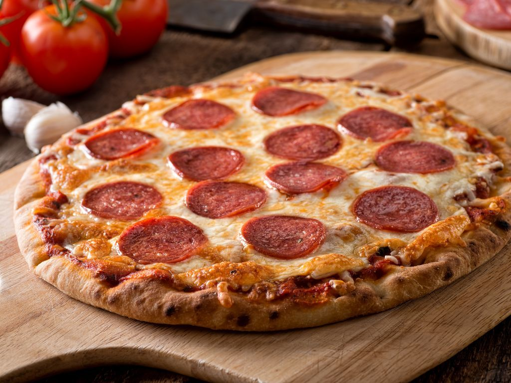

Pizza Napolitana
Ingredientes- 250 gramos de Harina
- 1 pizca de Sal
- 125 mililitros de Agua
- 10 gramos de Levadura fresca
- 25 mililitros de Salsa de tomate
- 250 gramos de Mozzarella
- 2 unidades de Tomates frescos
- 1 pizca de Sal
- 1 diente de Ajo
- 2 cucharadas de postre de Perejil
- 10 unidades de Aceitunas verdes
- 20 mililitros de Aceite de oliva
- Empezaremos nuestra pizza casera por la masa. Para ello, coloca la harina mezclada con la pizca de sal sobre la mesa y haz un hueco en el centro para darle forma de corona.
- Coge un bol y vierte el agua junto con el aceite y la levadura. Revuélvelo todo hasta disolver por completo la levadura y vierte la mezcla en el centro de la corona de harina.
- Amasa durante 7 minutos sobre la mesa, haz una bola con la masa y cúbrela con papel film. Deja que repose durante 20 minutos.
- Pasado el tiempo, estira la masa con la ayuda de un rodillo y pásala a una bandeja de horno previamente enharinada. Ahora es el momento de rellenarla.
- Extiende la salsa de tomate sobre la base de la pizza dejando libre un borde de 1 cm. Luego, distribuye la mozzarella rallada por todas partes y hornea la pizza durante 10 minutos a 170ºC. Retírala y cúbrela con tomates cortados en rodajas.
- Añade sal al gusto, reparte el ajo y el perejil picados. Incorpora las aceitunas y rocia la pizza casera con un hilo de aceite de oliva. Hornéala durante 5 minutos más. Retira la pizza napolitana y sírvela.
Pizza Fugazzeta
Ingredientes- 1 lámina de Masa para pizza
- 2 unidades de Cebolla
- 1 cucharada sopera de Orégano seco
- 1 pizca de Sal
- 1 pizca de Pimienta
- 1 puñado de Aceitunas negras sin semilla
- 50 centímetros cúbicos de Aceite de oliva
- 1 pieza de Mozarella fresca
- En esta receta hemos usado una masa para pizza ya lista
- Corta la cebolla en juliana y saltea con el aceite hasta que se dore ligeramente. Entonces apaga el fuego y añade un poco de sal y pimienta y reserva.
- Para armar la pizza fugazza, coloca sobre la basa la mozarella fresca, encima las cebollas y decora con las aceitunas negras cortadas en rodajas. Para terminar, es polvorea con el orégano seco por toda la superficie.
- Lleva al horno según las instrucciones del fabricante de la masa. Si has hecho tu propia masa puedes cocinar la pizza a 200ºC por unos 12-15minutos o hasta que el queso se haya derretido y los bordes de la pizza estén dorados.

Procedimiento
Pizza Pepperoni
Ingredientes- 100 gr. de pepperoni
- 100 gr. de salami
- 200 gr. de queso mozzarella rallado
- 1 lata de tomate triturado
- 100 gr. de queso parmesano rallado
- 1 base de masa para pizza casera
- Sal
- Pimienta
- Orégano
- Albahaca (opcional)
- Empieza preparando la salsa casera para tu pizza pepperoni. Aunque algunos optan por el tomate frito, nosotros preferimos el tomate triturado. Añade aceite de oliva a una sartén y cuando esté caliente incorpora el tomate con sal, pimienta y orégano al gusto, si lo deseas añade unas hojas de albahaca fresca para mayor sabor.
- Remueve y cocina a fuego muy bajo hasta que la salsa espese. Si el punto de acidez del tomate resalta demasiado corrígelo con una pizca de azúcar. Cuando la salsa esté casi a punto, enciende el horno a 200 ºC.
- Estira la masa casera que has preparado y colócala en la bandeja cubierta con papel vegetal. Pincha la masa con un tenedor para que no suba. Luego, corta el pepperoni y el salami en rodajas finas.
- Cubre la base con salsa que has preparado y pon una capa con el queso mozzarella rallado, el pepperoni y las rodajas de salami. Remata con queso parmesano al gusto e introduce en el horno durante 15 minutos o hasta que esté perfectamente dorada.

Pizza 4 Quesos
Ingredientes- 1 masa de pizza casera
- 200 gr. de mozzarella
- 80 gr. de queso azul
- 100 gr. de queso parmesano rallado
- 100 gr. de queso ricotta o provolone
- 100 gr. de salsa de tomate casera
- Orégano
- Pimienta
- Para esta receta lo ideal es optar por una masa para pizza casera, pues esto hará una gran diferencia en el resultado final. Del mismo modo, te recomendamos hacer una salsa de tomate casera con tomate natural triturado, un poco de aceite de oliva, sal, pimienta y tres hojas de albahaca fresca. Solo debes mezclar los ingredientes y dejar cocinar a fuego bajo hasta que espese.
- Enciende el horno a 200ºC para que se vaya calentando mientras armas tu rica pizza 4 quesos.
- Estira la base de la pizza y colócala en una bandeja apta para el horno previamente cubierta de papel vegetal. Pincha la masa con un tenedor para evitar que la misma suba durante la cocción.
- Si has comprado la mozarella en bola entonces córtala en rodajas, trocea con las manos el queso azul y ralla el parmesano, prepara también el ricotta, que podrás distribuir con tus manos. Si has optado por el provolone, córtalo en trozos pequeños.
- Esparce una generosa cantidad de salsa de tomate sobre la base y distribúyela uniformemente. Luego reparte los cuatro quesos por toda la masa y remata con un toque de orégano y pimienta al gusto.
- Mete la pizza en el horno y deja cocinar 15 minutos o hasta que esté perfectamente dorada y los quesos gratinados. Sácala ¡y a disfrutar! Esta pizza 4 quesos casera es un lujo que todos en casa disfrutarán.